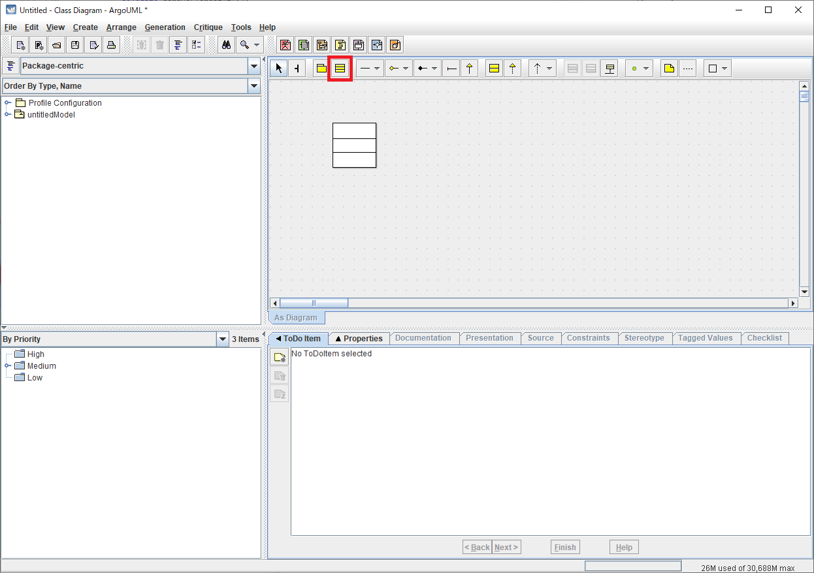

ArgoUMLはJavaで書かれたオープンソースのUMLエディタです．
ArgoUMLを起動すると,まずクラス図の編集画面が開きます．
編集画面上で行える操作はモードによって異なります．
モードの切り替えは，ツールバーのボタンをクリックすることによって行うことができます．
例えばクラス配置モードでは，編集画面上をクリックすると，クリックした位置にクラスを配置することができます（クラス配置機能）．
クラスを配置すると選択モードに戻ります．
選択モードでは，編集画面上に配置されたクラスをクリックすると，そのクラスを選択状態にすることができます（選択機能）．

選択状態のクラスは，Delキーを押すことで削除することができます（削除機能）．
次へ